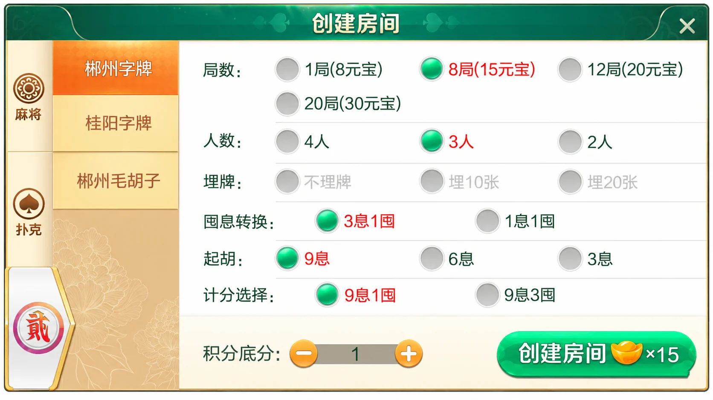
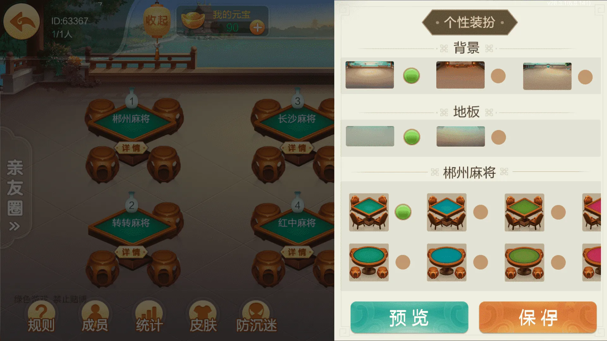

七星系列 · 地区界面与技术笔记
七星郴州：大厅装扮与预览状态
12项玩法组合，围绕背景、地板和桌台样式讨论预览与保存的职责。
郴州版本内容
郴州版本包含12项玩法：麻将4项，为红中麻将、转转麻将、长沙麻将、郴州麻将；扑克5项，为11张跑得快、跑得快、欢乐斗地主、三打哈、新三打哈；字牌3项，为郴州字牌、桂阳字牌和郴州毛胡子。
字牌配置与大厅装扮承担不同职责。前者决定房间规则选项，后者改变背景、地板和桌台外观。将这两类配置分开管理，有助于避免切换皮肤时意外覆盖房间设置。
字牌规则与个性装扮
郴州字牌面板列出人数、局数、囤息转换、起胡和计分选择等字段。个性装扮侧栏则提供背景、地板与桌台样式，并有“预览”和“保存”两个入口。它适合采用临时预览状态：用户先看效果，确认后再保存偏好。




规则面板为AI整理的截图局部，并非原始截图；装扮图仅压缩。群组ID63367和版本标记保留，不替换为用户ID。元宝与积分标签按原图保留，不据此判断实际兑换机制。
预览状态与已保存偏好分开
预览应该从已保存偏好生成独立草稿。切换背景或桌台只修改草稿；关闭面板可直接放弃；保存成功后再更新已保存偏好。如果存储失败，原偏好仍应保留，并提示用户重试。
下面是独立编写的主题预览示例，使用平面的字符串选项与白名单。它不是七星原工程代码，也不操作房间规则、积分或结果。选项名称与资源标识仅用于演示，实际项目应以自己的资源清单为准。
export function previewTheme(saved, patch, allowed) {
const result = { ...saved };
for (const [key, value] of Object.entries(patch)) {
if (!Object.hasOwn(allowed, key) || !allowed[key].includes(value))
throw new TypeError('Unknown theme option');
result[key] = value;
}
return result;
}
独立主题预览示例通过10项断言，覆盖草稿隔离、字段保留、多项更新、未知样式和非主题字段拒绝。这里返回的是新对象，尚未执行保存；嵌套配置需要另行定义复制策略，不能把浅拷贝当作通用深拷贝。
资源加载也应属于预览过程：图片加载失败时保持原样式，避免出现空白大厅。保存动作应记录稳定的资源标识，界面显示的中文标签可以独立更新。只有外观改变时，不必重建房间或重新请求玩法规则。